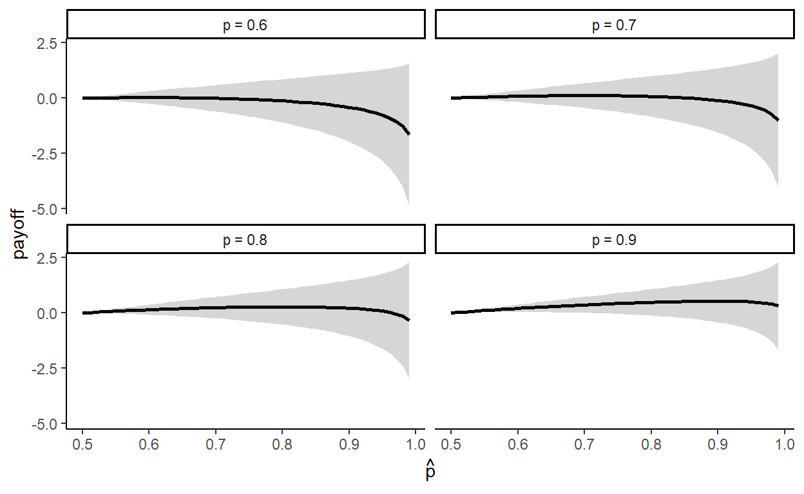
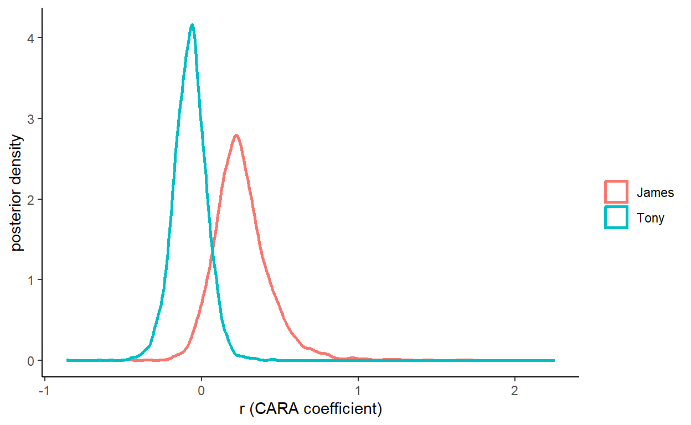
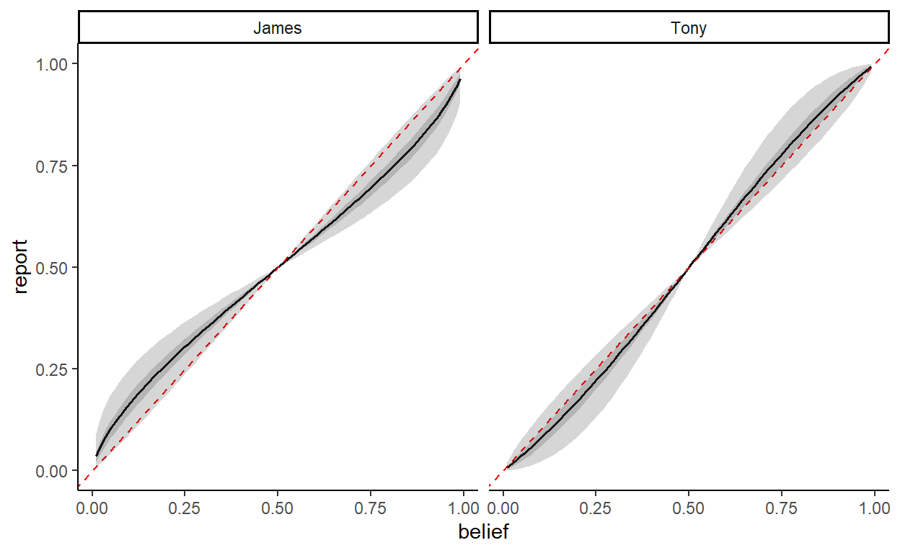

Because I am taking this probabilistic footy tipping thing a bit too seriously
In what has proven to be a delightfully interesting conversation about forecasting and probabilistic footy tipping with Tony Corke, we ended up estimating our own risk preferences. This started from a conversation about what I will call “prediction shading”, in which a forecaster might believe that a binary event (e.g. Collingwood beats St Kilda in Round 0 of the 2026 AFL season) happens with probability (say) 80%, but because of the incentives provided instead reports that the event will occur with probability somewhat closer to 50% (if the forecaster is risk-averse).
Why might a forecaster want to do this? Well, it has to do with the interaction between the incentives provided to make a forecast, and the forecaster’s risk preferences. For example, in the Monash University Probabilistic Footy Tipping Competition, forecasters are rewarded for forecasting that an event will happen with probability \(\hat p\) as follows (here I am ignoring draws, which are possible since they are predicting the results of Australian Rules Football matches):
\[ \begin{aligned} \mathrm{payoff}(\hat p) &=\begin{cases} 1+\log_2(\hat p) &\text{if the event occurs}\\ 1+\log_2(1-\hat p)&\text{if the event does not occur} \end{cases} \end{aligned} \]
Now, suppose to begin with that you are risk-neutral, and so you want to maximize the expected value of a forecast. If you believe that the event will occur with probability \(p\), then your expected payoff from forecasting \(\hat p\) is:
\[ \begin{aligned} EV(p, \hat p)&=p(1+\log_2(\hat p))+(1-p)(1+\log_2(1-\hat p)) \end{aligned} \]
Maximizing this with respect to \(\hat p\):
\[ \begin{aligned} \frac{\partial EV(p,\hat p)}{\partial \hat p}&=\frac{p}{\hat p\log(2)}-\frac{1-p}{(1-\hat p)\log(2)}=0\\ 0&=p(1-\hat p)-(1-p)\hat p\\ \hat p&=p \end{aligned} \]
That is, if you are risk-neutral, it is optimal to correctly report your belief.
But what if I’m not risk-neutral? Suppose instead that I am an expected utility maximizer with utility function \(u(\cdot)\). My expected utility of reporting \(\hat p\) when my actual belief is \(p\) is then:
\[ \begin{aligned} EU(p,\hat p)&=pu(1+\log_2(\hat p))+(1-p)u(1+\log_2(1-\hat p)) \end{aligned} \]
This has a first-order condition of:
\[ \begin{aligned} \frac{\partial EU(p, \hat p)}{\partial \hat p}&=p\frac{u'(1+\log_2(\hat p))}{\hat p\log(2)}-(1-p)\frac{u'(1+\log_2(1-\hat p))}{(1-\hat p)\log(2)}=0 \end{aligned} \]
Which re-arranges to:
\[ \begin{aligned} \frac{p(1-\hat p)}{(1-p)\hat p}&=\frac{u'(1+\log_2(1-\hat p))}{u'(1+\log_2(\hat p))} \end{aligned} \]
which is not very helpful because I don’t (yet) know my \(u(\cdot)\). But the intuition is that a risk-averse (i.e. \(u''(x)<0\)) forecaster will shade \(\hat p\) toward 0.5, because this reduces the variance in payoffs (at the expense of a reduction in expected value).
For example, here is what this trade-off looks like for a few values of \(p\). Here I show the expected value (solid line) and \(\pm\) one standard deviation around this (shaded region). In fact, there is a lot of downside risk with this scoring rule. Note that you can earn at most one point by making a forecast (i.e. correctly predict that a team will win with probability one). But then you run the risk of being infinitely punished if you are wrong. Therefore, maybe eliciting our higher-order risk preferences (prudence and temperance) might help us make even better decisions in this environment. For now, I will leave this as an exercise for the reader.

One thing I noticed here is that the expected value curve (black line) is really flat, so there could be a lot of trading off between expected value and variance!
So in order to make good decisions, Tony and I needed to know our risk preferences. As I wanted to automate my tiping process as much as possible, this meant telling my model how risk-averse I am. For simplicity, I went with a common one-parameter specification for \(u(\cdot)\), the constant absolute risk aversion (CARA) utility function:
\[ u(x)=\frac{1-\exp(-rx)}{r} \]
where \(r\in\mathbb{R}\) is the risk aversion parameter. Here I chose CARA rather than the more popular CRRA becuase i needed to deal with negative payoffs. Furthermore, in this application I am not interested in expanding the model to something more general than expected utility theory (e.g. rank dependent utility). I want my decisions to be consistent with the axioms of expected utility theory, and so I will use my best one-parameter approximation of this model.
Since my application here is a footy tipping competition, and I will be rewarded only in bragging rights (in the unlikely event that I do well at all), I need to think about the relevant payoff scale of these competition points. To do this, I provisionally entered my tips as if I was risk neutral for round zero, and then the website helpfully gave me the following information:
I used these as a rough relevant range for the payoffs I would be dealing with. I then selected a battery of pairwise lottery choices with these three outcomes. For this, I chose to use the battery designed for Harrson and Ng (2016)1 This consists of 80 decisions between a “Left” and “Right” lottery. My implementation and my data look like this (just showing a random ten of the total 80 decisions):
|
Left lottery
|
Right lottery
|
|||||
|---|---|---|---|---|---|---|
| -1.0 | +0.1 | +0.8 | choice | -1.0 | +0.1 | +0.8 |
| 0.70 | 0.00 | 0.30 | R | 0.50 | 0.50 | 0.00 |
| 0.02 | 0.95 | 0.03 | R | 0.08 | 0.80 | 0.12 |
| 0.00 | 0.50 | 0.50 | L | 0.30 | 0.00 | 0.70 |
| 0.48 | 0.28 | 0.24 | L | 0.44 | 0.44 | 0.12 |
| 0.50 | 0.30 | 0.20 | R | 0.60 | 0.00 | 0.40 |
| 0.08 | 0.06 | 0.86 | L | 0.02 | 0.24 | 0.74 |
| 0.60 | 0.25 | 0.15 | L | 0.50 | 0.50 | 0.00 |
| 0.90 | 0.00 | 0.10 | R | 0.80 | 0.20 | 0.00 |
| 0.08 | 0.84 | 0.08 | L | 0.05 | 0.90 | 0.05 |
| 0.20 | 0.20 | 0.60 | L | 0.10 | 0.60 | 0.30 |
Tony and I selected our 80 lotteries in this battery, and then I used these decisions to estimate \(r\) using Stan. Below is the Stan program I wrote. In the generated quantities block I predict how much we should shade our predictions, which should give you an idea about how substantial of a departure from risk neutral we are.
functions {
int which_max(vector x) {
int d = dims(x)[1];
real m = -99999999.999999999;
int i = -1;
for (tt in 1:d) {
i = x[tt]>m ? tt : i;
m = x[tt]>m ? x[tt] : m;
}
return i;
}
vector ufun(vector x, real r) {
return (1.0-exp(-r*x))/r;
}
}
data {
int<lower=0> N;
matrix[N,3] pL, pR;
vector[3] prizes;
array[N] int choiceR;
}
transformed data {
matrix[N,3] dPR = pR-pL;
int nprobs = 99;
vector[nprobs] probs;
for (pp in 1:nprobs) {
probs[pp] = (pp+0.0)/100.0;
}
int nreports = 9999;
vector[nreports] reports;
for (rr in 1:nreports) {
reports[rr] = (rr+0.0)/(10000.0);
}
}
parameters {
real r; // CARA coefficient
real<lower=0> lambda; // choice precision
}
transformed parameters {
// utility of each prize
vector[3] u = (1.0-exp(-r*prizes))/r;
// contextual utility normalization
u = u/(u[3]-u[1]);
}
model {
// prior ---------------------------------------------------------------------
r ~ normal(0,1);
lambda ~ lognormal(0,5);
// likelihood ----------------------------------------------------------------
choiceR ~ bernoulli_logit(lambda*dPR*u);
}
generated quantities {
real choicePR = inv_logit(lambda*[-0.5, 1, -0.5]*u);
// determine the optimal report given r
vector[nprobs] REPORT;
for (pp in 1:nprobs) {
real p = probs[pp];
vector[nreports] U = p*ufun(1+log2(reports),r)+(1.0-p)*ufun(1+log2(1.0-reports),r);
int ii = which_max(U);
REPORT[pp] = reports[ii];
}
}First, let’s take a look at our estimated CARA coefficients, \(r\). The posterior distributions of these are shown in the figure below. It turns out that I am risk-averse (posterior mean \(r\approx 0.26\), standard deviation \(0.19\)), and Tony is ever so slightly risk-loving (posterior mean \(r\approx -0.08\), standard deviation \(0.11\)). However there is lots of posterior uncertinaty in these estimates, and you can see this in the plot below as these being substantial posterior density for both of us either side of zero.

But what I’m really interested in is how much the model says we should shade our tips toward 50%. So in the figure below, I plot the reporting function. That is, for each belief (horizontal coordinate), what tip should I report (vertical coordinate)? The black line shows the posterior mean prediction, and the gray areas express the posterior uncertainty in 50% and 95% Bayesian credible regions. My reporting function looks like it is substantially different to truthful reporting (red dashed line). Since I am risk-averse, I should report probabilities closer to 50% than they actually are. Tony, being slightly risk-loving, should shade in the other direction, pulling probabilities to their extremeties. However there is not really that much difference between Tony’s reporting function and the truthful reporting line, so I wouldn’t get too excited about him being anything different to risk neutral.

So now I go to my predictive model, and use my estimate of \(r\) to shade my tips. I am going to write another post about my predictive model, but it will probably come after the end of the AFL season. On the off chance that it does well, I don’t want anyone copying me!
At some point in the competition, I suspect that I wil need to re-calibrate my risk preference parameter \(r\). This is because my shading should be a function of my rank in the tournament. For example, suppose all I want to do is win. If I am currently winning (unlikely), then I might want to preserve my lead by reducing the variance induced by my tips. In this case I would want to be making decisions with a larger \(r\). In the more likely case that I am doing terribly, I might want to take a lot of risks to give me a chance of getting to the top of the leaderboard, at the expense of a lot of downside risk.
Check out this paper, which kind of does the reverse of what I’m doing here. Whereas I am trying to work out how much I should shade when I report my beliefs, this paper estimates people’s true beliefs when their reports could be shaded:
Harrison, Glenn W., Brian Monroe, and Eric Ulm. Recovering subjective probability distributions: a Bayesian approach. CEAR Working Paper 2022–03, Center for the Economic Analysis of Risk, Robinson College of Business, Georgia State University, 2022.
Harrison, Glenn W., and Jia Min Ng. “Evaluating the expected welfare gain from insurance.” Journal of Risk and Insurance 83, no. 1 (2016): 91-120.↩︎